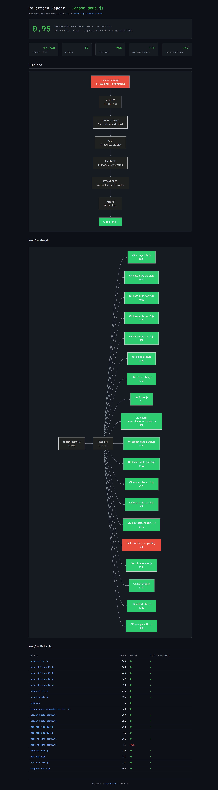

Built for Precision
Refactory isn't just another AI tool. It's a hybrid engine designed to provide the guarantees that standard LLMs cannot.
Golden Snapshots
Capture export counts and type signatures before you refactor. Our verifier catches behavioral drift between the original monolith and the final modular structure.
Adaptive Compression
Refactory uses AST-aware compression to send function maps to the LLM. This allows us to plan 30,000+ line decompositions while staying well within free-tier context limits.
Refactory Score
A deterministic metric calculated as clean_rate * size_reduction. If any module fails to load or the monolith isn't sufficiently broken down, the score tells you exactly why.
Recursive Lexer
Our deterministic engine handles complex JS patterns like IIFEs, arrow-function exports, and deeply nested declarations that often trip up regex-based extractors.
Hybrid vs Pure AI Extraction
| CAPABILITY | REFACTORY | AI ONLY |
|---|---|---|
| Syntax Validity | High fidelity (JS/TS, Python) | Probabilistic |
| Token Cost | $0.00 | Expensive (Large Context) |
| Scale Limit | Unlimited | ~2k-4k lines |
| Async/Await Safety | Perfect Replication | Prone to dropping markers |
Full Decomposition Breakdown
View the full output of a 17,000+ line Lodash decomposition. Every module is verified, every dependency is mapped.
